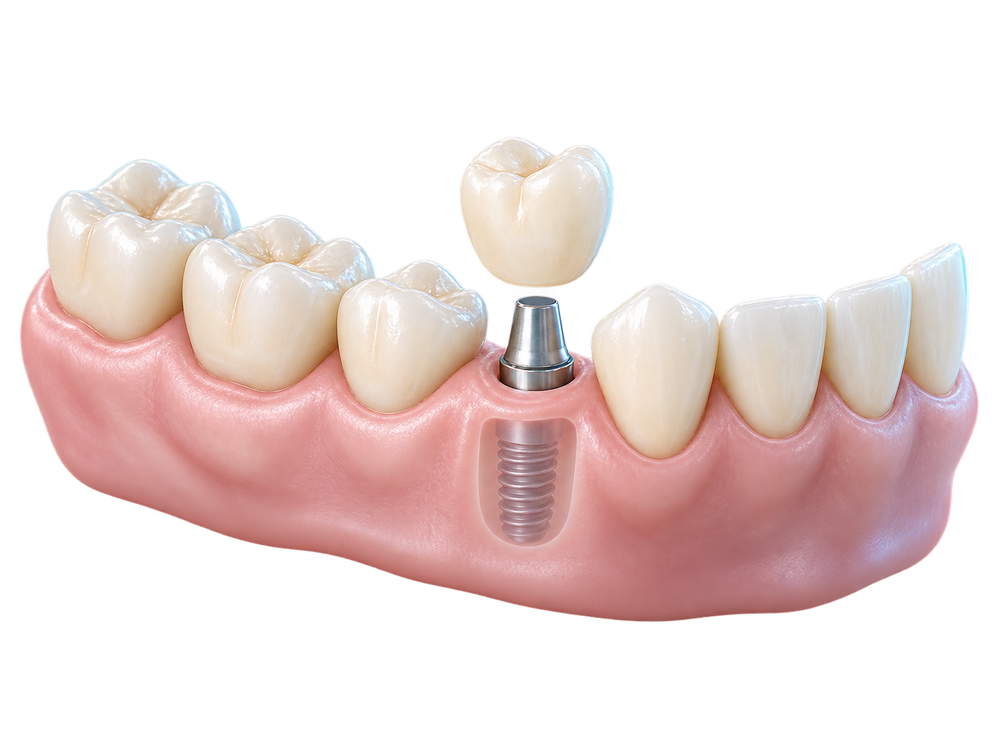

Хирургический этап
Один зуб
от 35 000 ₽*за один имплантат Alpha-Bio Tec
Что входит в этап +
- Включены имплантат, формирователь десны, анестезия, контрольное КТ после операции и через 3–6 месяцев после приживления, послеоперационные осмотры.
- Протезирование — отдельный этап. Включены коронка и абатмент, анестезия при необходимости.
- Совместная консультация хирурга-имплантолога и ортопеда — от 1 800 ₽; КТ до операции — отдельно.
Neodent — от 38 000 ₽, Nobel Biocare — от 58 000 ₽ за хирургический этап. Коронка Neodent — от 45 000 ₽, Nobel — от 55 000 ₽, отдельно.